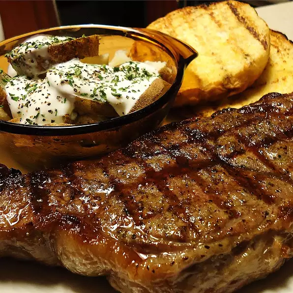

Tasty Steak Dinner

Description
Juicy and tender Bourbon steak made quick and easy with just 3 simple ingredients.
Short prep time at only 15 minutes with a hot and fast cook time of 10 minutes to give it a perfect, brown crust.
Ingredients
- 2 (6 ounce) Boneless NYC Strip Steak
- 3 cups bourbon whiskey
- 1 cup dark brown sugar
Steps
-
Gently tenderize steaks with a meat mallet. With a sharp knife, lightly score the meat on one side diagonally.
Place steaks in a casserole dish, scored side up, and pour bourbon over them. Rub the brown sugar evenly over each steak.
Marinate in refrigerator for 1 to 3 hours.
-
Preheat grill to high heat, and lightly oil grate.
-
Place the steaks on the hot grill, with the sugar side down.
Let cook until sugar has caramelized, 3 to 5 minutes, then flip steaks, and finish cooking to desired doneness.
Back to Home...